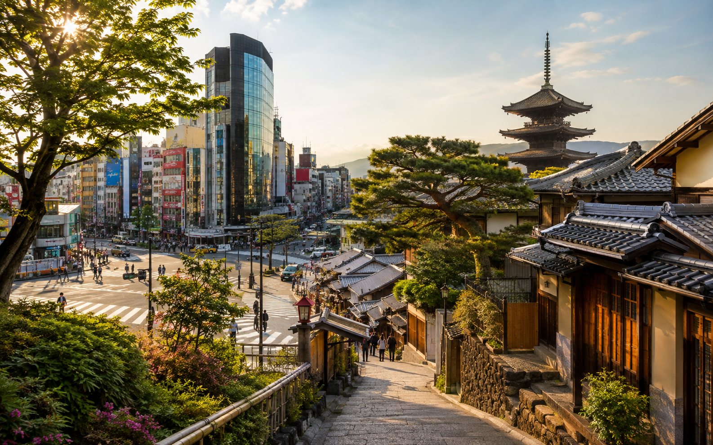
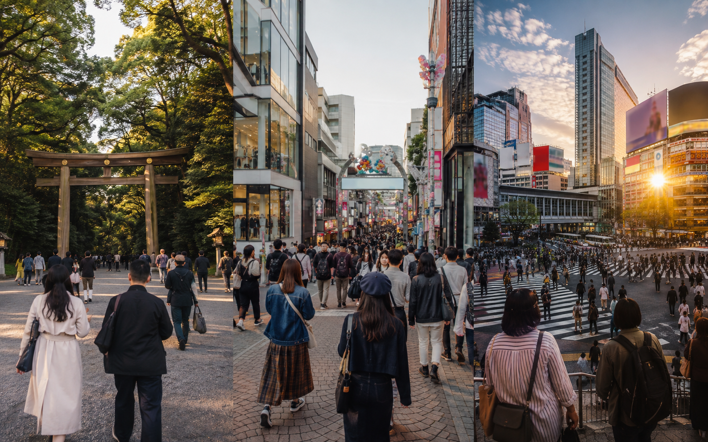
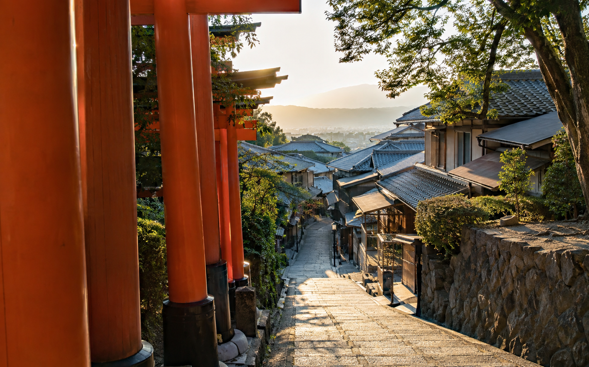

Japan 7-Day Itinerary for First-Time Visitors
Seven days in Japan is enough for a rewarding first trip, but only if you accept that one week is not enough to see every famous city. The biggest mistake I would avoid is trying to fit Tokyo, Kyoto, Osaka, Hakone, Mount Fuji, Nara, and Hiroshima into the same seven days. Japan's trains make those places look close on a map, but hotel changes and station transfers can quickly take over a short trip.
For a first visit, I would use Tokyo and Kyoto as the two main bases. Spend the first part of the week exploring Tokyo, take the Shinkansen west, and use Kyoto for the second half. Osaka can be added as an optional visit from Kyoto or as your final stop if your flight leaves from Kansai International Airport. This gives you modern Japan, historic Japan, food, neighborhoods, temples, shrines, and the experience of the Shinkansen without making the week feel like a transport challenge.
This itinerary assumes 7 days and 6 nights in Japan. If you actually have seven nights, I would add the extra night to Tokyo or Kyoto instead of adding another city. If you are still deciding whether a week is enough, read How Many Days Do You Need in Japan? before booking.
7-Day Japan Itinerary at a Glance

| Day | Base | Main Plan |
|---|---|---|
| Day 1 | Tokyo | Arrive, settle in, light neighborhood exploration |
| Day 2 | Tokyo | Meiji Jingu , Harajuku, Shibuya, Shinjuku |
| Day 3 | Tokyo | Asakusa , Ueno and eastern/central Tokyo |
| Day 4 | Kyoto | Shinkansen to Kyoto, downtown Kyoto and Gion |
| Day 5 | Kyoto | Fushimi Inari, Kiyomizudera and Higashiyama |
| Day 6 | Kyoto | Kyoto second day or optional Osaka visit |
| Day 7 | Departure | Kyoto/Osaka morning and airport transfer |
This route works best if you can:
Fly into Tokyo → travel west → fly home from the Osaka/Kansai region
If flights make a Tokyo round trip much cheaper, you can still use this itinerary, but you will need to allow time to return to Tokyo before departure.
Why I Recommend Only Two Hotel Bases?
One week disappears quickly when every second day includes check-out and check-in.
Using Tokyo and Kyoto as your main bases means you only make one major hotel move during the trip.
That gives you more time for:
- ✓Full sightseeing days
- ✓Slower meals
- ✓Exploring neighborhoods
- ✓Rest after long walking days
- ✓Changes caused by weather
- ✓Places you discover after arrival
Osaka is close enough to Kyoto that you do not need to change hotels just to experience part of the city. JNTO treats Kyoto, Nara, and Osaka as a connected Kansai travel area, which makes day trips between them practical.
If Osaka is very important to you, you can stay there on the final night. But I would make that a personal choice rather than a requirement of every seven-day itinerary.
Where to Stay for This 7-Day Route?
I would keep accommodation simple.
Tokyo: 3 Nights
Choose an area with useful railway connections rather than choosing a hotel only because it is cheap.
Good first-trip areas can include:
- ✓Shinjuku
- ✓Shibuya
- ✓Ueno
- ✓Tokyo Station area
Your best choice depends on airport access and the neighborhoods you want to visit.
The full comparison belongs in Where to Stay in Tokyo: Best Areas for First-Time Visitors.
Kyoto: 3 Nights
For a short trip, I care strongly about transport convenience.
Staying around:
- ✓Kyoto Station
- ✓Downtown Kyoto
- ✓Kawaramachi/Gion area
can each work for different plans.
Use Where to Stay in Kyoto: Best Areas for First-Time Visitors before booking.
Day 1: Arrive in Tokyo and Keep the First Day Easy
Do not make arrival day one of the busiest days of the itinerary.
If you are flying from the United States, you may arrive after a long flight and major time-zone change. Then you still need to clear immigration, collect luggage, travel from the airport, find the hotel, and get settled.
I would plan Day 1 around orientation rather than sightseeing performance.
After Arriving at the Airport
Your first tasks are simple:
- ✓Complete arrival procedures.
- ✓Get connected to mobile data.
- ✓Get some Japanese yen if needed.
- ✓Set up or arrange your local transport payment.
- ✓Travel to your hotel.
- ✓Leave your luggage or check in.
Do not add several airport errands unless you actually need them.
The faster you get to your base, the easier the first evening becomes.
What to Do on Your First Evening
Choose something close to your hotel.
If you stay around Ueno or Asakusa, you could take a light walk around that part of eastern Tokyo.
If you stay in Shinjuku, explore the nearby streets and find an easy dinner.
If you stay near Shibuya, seeing Shibuya Crossing and the surrounding area can be enough for the first evening.
I would avoid booking an expensive timed attraction immediately after an international flight.
The Goal of Day 1
By the end of the evening, you should know:
- ✓Where your nearest useful station is
- ✓How to get into and out of it
- ✓Where to buy basic food or drinks
- ✓How your phone data works
- ✓How your payment setup works
Then sleep.
A calm first evening gives you a much better Day 2.
Day 2: Western Tokyo – Meiji Jingu, Harajuku, Shibuya and Shinjuku

Your first full day should introduce Tokyo without forcing you across the entire city.
I would group several western Tokyo areas together.
Morning: Meiji Jingu
Start around Meiji Jingu.
The shrine and surrounding forest give you a quieter start before moving into some of Tokyo's busiest commercial neighborhoods.
Going earlier also helps you begin the day before the busiest afternoon periods.
Afterward, continue toward Harajuku.
Late Morning: Harajuku
Harajuku gives you a very different side of Tokyo within walking distance.
Depending on your interests, spend time around:
- ✓Takeshita Street
- ✓Omotesando
- ✓Side streets and shops
- ✓Cafes
Do not feel that you need to visit every famous store or viral food stop.
This itinerary works better when each area has room to breathe.
Afternoon: Shibuya
Continue to Shibuya.
This is where I would allow several hours rather than treat Shibuya Crossing as a five-minute photo stop.
You can explore:
- ✓Shibuya Crossing
- ✓Surrounding shopping streets
- ✓Department stores
- ✓Cafes
- ✓Shibuya viewpoints if you have booked one
If you want a timed observation deck, make that the main reservation for this part of the day rather than stacking several bookings around it.
Evening: Shinjuku
Finish the day in Shinjuku.
Explore the streets, find dinner, and enjoy the evening atmosphere.
If your hotel is already in Shinjuku, even better. You finish close to your room instead of adding another long trip at the end of your first full sightseeing day.
Why This Tokyo Day Works
Meiji Jingu, Harajuku, Shibuya, and Shinjuku fit into one broad side of Tokyo.
That means the day moves in a useful direction rather than sending you back and forth across the city.
This is one of the rules I use throughout Japan:
group places geographically before ranking them by popularity.
It saves time without removing anything important.
Day 3: Eastern Tokyo – Asakusa, Ueno and Central Tokyo
Day 3 gives you a different side of the city.
Instead of repeating modern shopping areas, I would focus on eastern Tokyo first and then use the later part of the day for whichever central area interests you most.
Morning: Asakusa and Sensoji
Start in Asakusa.
Sensoji is one of Tokyo's best-known temples, and visiting earlier in the day can make the area easier to enjoy before larger crowds arrive.
Spend time around:
- ✓Kaminarimon
- ✓Nakamise area
- ✓Sensoji
- ✓Nearby streets
Do not plan only the temple itself.
Part of Asakusa's value is walking the surrounding area.
Late Morning or Lunch: Stay Around Asakusa
Have lunch nearby rather than immediately getting on another train.
A common itinerary problem is treating eating as something that must happen in another famous neighborhood.
If you are already somewhere useful, eat there.
Afternoon: Ueno
Move to Ueno.
Depending on your interests, you might use the afternoon for:
- ✓Ueno Park
- ✓A museum
- ✓Ameyoko
- ✓Shopping
- ✓A slower cafe break
You do not need to do all of them.
Choose what matches your interests and energy.
Optional Late Afternoon or Evening
After Ueno, choose one additional area rather than several.
Possible choices include:
Tokyo Station and Marunouchi
Good if you want architecture, shopping, and to become familiar with Tokyo Station before your Shinkansen journey.
Ginza
Better if shopping, department stores, or a more polished city atmosphere interest you.
Akihabara
A stronger choice if gaming, electronics, anime, or pop culture is one of your main interests.
Pick one.
This is a seven-day trip, so trying to add Tokyo Station, Ginza, Akihabara, and another nighttime neighborhood would work against the balanced pace we are trying to protect.
Prepare for Kyoto Before Going to Bed
Day 4 is your only major hotel-transfer day.
Before sleeping:
- ✓Pack most of your luggage.
- ✓Check your Shinkansen departure station.
- ✓Confirm your Kyoto hotel.
- ✓Check whether your luggage needs special handling.
- ✓Keep important tickets and documents easy to reach.
If you are traveling with large luggage, check the current Shinkansen baggage rules or consider forwarding the main suitcase.
The goal is to make the next morning a simple transfer rather than a packing project.
Should You Add a Mount Fuji or Hakone Day Trip to This 7-Day Route?
I would not make it part of the default itinerary.
Several competing seven-day routes add Hakone or a Mount Fuji day trip.
It can work, but something else has to lose time.
If seeing Mount Fuji is one of the main reasons you are visiting Japan, replace one Tokyo day with the trip.
Do not simply add it on top of everything else.
For a first seven-day visit, I would rather give Tokyo and Kyoto enough time than turn Day 3 into another long transport day by default.
Should You Add Nara?
The same rule applies.
Nara is practical from Kyoto, but it should replace part of your Kyoto or Osaka time rather than appear as a free extra day.
With only seven days, every side trip has an opportunity cost.
We will deal with the Kyoto, Osaka, and optional Nara choices in the next section of this itinerary.
Day 4: Travel From Tokyo to Kyoto
Day 4 is the main transfer day in this seven-day Japan itinerary.
I would leave Tokyo in the morning rather than very early unless you have a specific reason. The goal is to reach Kyoto with enough time to enjoy part of the afternoon without turning the transfer into a stressful start.
The Tokaido Shinkansen connects Tokyo with Kyoto, making this one of the easiest long-distance moves on a first Japan trip.
Before leaving your Tokyo hotel:
- ✓Check out
- ✓Confirm your train
- ✓Keep tickets or booking details ready
- ✓Make sure your luggage is easy to manage
- ✓Check your Kyoto hotel address
- ✓Keep one small bag with important items
If your suitcase is large, review the current baggage rules before travel.
Arriving in Kyoto
After reaching Kyoto, go to your hotel first.
If check-in is not available yet, leave your luggage where permitted rather than carrying it through the city.
Do not try to fit a full Kyoto sightseeing day into the remaining hours.
I would use the afternoon and evening to get familiar with central Kyoto.
Afternoon: Downtown Kyoto
A light first Kyoto afternoon can include parts of:
- ✓Nishiki Market area
- ✓Teramachi
- ✓Shinkyogoku
- ✓Downtown streets
- ✓Kamo River area
Choose based on where your hotel is located.
This part of the day should feel easy after the Tokyo transfer.
Evening: Gion and Pontocho Area
Later, walk around Gion or the nearby Pontocho area.
You do not need a long list of attractions here.
The value is in walking through the streets, seeing the evening atmosphere, and having dinner nearby.
Be respectful around residential streets and follow local photography rules.
Why I Keep Day 4 Light
A transfer day already uses energy.
If you add several temples, cross-city bus journeys, and timed bookings immediately after arriving, the day becomes harder than it needs to be.
Save the main Kyoto sightseeing for Day 5.
Day 5: Fushimi Inari, Kiyomizudera and Higashiyama

Day 5 is your main historic Kyoto day.
The key is starting early and grouping nearby areas properly.
I would not try to visit every famous temple in Kyoto.
Choose a strong route and give yourself enough time to walk.
Early Morning: Fushimi Inari
Start at Fushimi Inari Taisha.
Going earlier can help you experience the shrine before the busiest part of the day.
The famous torii gates continue far beyond the first sections, but you do not need to complete the entire mountain route unless hiking is a major priority.
For a seven-day itinerary, I would spend enough time to enjoy the shrine and part of the trail, then move on.
Late Morning: Move Toward Eastern Kyoto
After Fushimi Inari, head toward the Higashiyama side of Kyoto.
This is where I would spend most of the remaining sightseeing day.
The area contains several important places close enough to combine more naturally than crossing the city repeatedly.
Kiyomizudera
Make Kiyomizudera one of the main stops.
Allow time for both the temple and the streets around it.
Do not rush immediately to the next attraction.
Part of the experience is walking through the surrounding historic area.
Walk Through Higashiyama
After Kiyomizudera, continue through areas such as:
- ✓Sannenzaka
- ✓Ninenzaka
- ✓Yasaka Pagoda area
- ✓Smaller nearby streets
This is one of the days where comfortable shoes matter.
The route involves plenty of walking and some slopes.
Yasaka Shrine and Gion
Continue toward Yasaka Shrine and Gion later in the day.
By grouping these places together, you avoid unnecessary transport and keep the day moving in one direction.
If you already spent time in Gion on Day 4, use this evening for another nearby area or simply slow down.
Do You Need More Temples on Day 5?
Not necessarily.
One common first-time mistake is treating Kyoto like a checklist of temples.
After several major sites, they can begin to blend together if you are rushing.
I would rather visit fewer places and have time to notice the details.
The dedicated Kyoto Travel Guide for First-Time Visitors will cover the city in more depth.
Day 6: Kyoto, Osaka or Nara?
Day 6 is the flexible day in this itinerary.
You have three good choices:
Option 1: Spend Another Full Day in Kyoto
This is my default recommendation.
Use the day for a different side of Kyoto.
Depending on your interests, you could focus on:
- ✓Arashiyama
- ✓Northern Kyoto
- ✓Philosopher's Path area
- ✓Gardens
- ✓More relaxed neighborhood exploration
This option works best if Kyoto is one of your main reasons for visiting Japan.
Option 2: Take a Day Trip to Osaka
Choose Osaka if you want:
- ✓Food
- ✓Shopping
- ✓Nightlife
- ✓A more energetic city atmosphere
You can travel from Kyoto, spend most of the day in Osaka, and return to the same Kyoto hotel at night.
That gives you Osaka without another hotel change.
A simple visit might focus on:
- ✓Osaka Castle area or another daytime stop
- ✓Shinsaibashi
- ✓Dotonbori
- ✓Evening food and city atmosphere
Do not try to see every major Osaka attraction in one day.
The purpose is to experience part of the city, not create a second full itinerary inside this one.
Option 3: Take a Day Trip to Nara
Nara is another good choice if temples, historic areas, and a slower day appeal to you more than Osaka.
A first visit can focus on the central park and temple area rather than trying to cover the whole city.
Because you return to Kyoto afterward, you avoid another hotel move.
Which Day 6 Option Would I Choose?
For a first seven-day trip:
Choose Kyoto if cultural sightseeing matters most.
Choose Osaka if food, nightlife, and modern city energy matter more.
Choose Nara if you want another historic experience and a calmer day trip.
Do not try to combine all three.
Seven days is already a short trip.
Should You Move Hotels to Osaka on Day 6?
Usually, I would not.
If your flight leaves from Kansai International Airport on Day 7, moving to Osaka for the final night can make sense depending on your flight time and hotel location.
But if your departure is later in the day, staying in Kyoto may still work.
I would only change hotels if it clearly improves the final airport transfer.
Do not add another check-out and check-in just because Osaka appears on the itinerary.
How to Decide Based on Your Departure Airport
Your final day changes depending on your flight.
Flying From Kansai International Airport
Staying in Kyoto or Osaka can both work.
Check:
- ✓Flight departure time
- ✓Airport transfer time
- ✓Number of train changes
- ✓How early you need to reach the airport
If your flight is early, a final Osaka-area night may reduce stress.
Flying From Tokyo
You need to account for the return journey.
For a seven-day trip, I would avoid planning a same-day Kyoto-to-Tokyo transfer followed by a tight international flight connection.
Build enough buffer into the schedule.
If your flight requires returning to Tokyo, it may be safer to travel back on Day 6 evening or adjust the route based on your exact departure time.
Day 7: Final Morning and Departure
Your last day should depend on where you are flying from and what time the flight leaves.
I would not build a heavy sightseeing schedule on departure day.
International flights require airport travel, check-in, security, and enough buffer for delays.
If You Are Flying From Kansai International Airport
If you stayed in Kyoto, use the morning only for something close to the hotel.
Good options might include:
- ✓A short local walk
- ✓Breakfast near the station
- ✓Last-minute shopping
- ✓A nearby temple or garden if time allows
Then collect your luggage and leave for the airport with a comfortable buffer.
If you stayed in Osaka on the final night, the same rule applies.
Keep the morning light and avoid crossing the city for one last attraction.
If You Are Flying From Tokyo
A Tokyo departure makes this seven-day route less efficient.
If possible, I would return to Tokyo on Day 6 evening and sleep there before the international flight.
That is usually safer than combining:
Kyoto → Tokyo → airport → international flight
on one tight schedule.
If your flight leaves very late and you have a large buffer, same-day travel may still work, but I would not make that the default plan for a first visit.
Is Osaka Worth Adding to a 7-Day Japan Itinerary?
Yes, but I would add it carefully.
For this short trip, Osaka works best as:
- ✓A day trip from Kyoto
- ✓An evening visit
- ✓A final-night stop before flying from Kansai
I would not automatically turn it into a third main hotel base.
That keeps the seven-day route cleaner.
Is Nara Worth Adding?
Yes, especially if historic temples and a slower day appeal to you.
But Nara should replace part of Day 6.
Do not add Nara on top of Kyoto and Osaka in the same day.
That would make the final part of the trip too rushed.
What I Would Skip on a First 7-Day Japan Trip
This is where many itineraries become unrealistic.
Unless one of these places is a major personal priority, I would normally leave them for a longer trip:
- ✓Hiroshima
- ✓Miyajima
- ✓Kanazawa
- ✓Hokkaido
- ✓Takayama
- ✓Several Fuji-area stops
- ✓Multiple long day trips
- ✓Several one-night hotel stays
They are all worth visiting.
They simply compete with limited time.
Your 10-, 14-, or 21-day Japan itinerary gives you much more room for them.
How Much Walking Should You Expect?
This itinerary includes a lot of walking.
Tokyo stations, Kyoto temple areas, shopping streets, and neighborhood exploration can all add distance beyond what you see on a route map.
I would wear tested walking shoes and avoid making every evening another long activity.
If Day 2 or Day 5 feels tiring, shorten the evening rather than trying to complete every optional stop.
How Much Should You Budget for This 7-Day Route?
Your final cost depends on airfare, hotel level, season, food, and whether you add Osaka or another paid experience.
For the in-country portion, our broader planning range for a seven-day trip is:
Budget traveler: around ¥90,000–¥140,000 per person
Mid-range traveler: around ¥150,000–¥230,000 per person
International airfare is separate.
See Japan Trip Cost: Budget for 7, 10 and 14 Days for the detailed cost breakdown.
Do You Need the JR Pass for This Route?
Not automatically.
A simple Tokyo → Kyoto route does not mean the nationwide JR Pass will save money.
Price the long-distance journeys you actually plan to take and compare them with the current pass cost.
If Osaka is a day trip from Kyoto, that still does not automatically make the nationwide pass worthwhile.
Use Japan Rail Pass: Is the JR Pass Worth It? before buying.
Should You Forward Your Luggage?
For only one major hotel move, luggage forwarding is optional rather than essential.
It can still help if:
- ✓Your suitcase is large
- ✓You dislike carrying luggage through stations
- ✓You are traveling with children
- ✓You have limited mobility
- ✓Your bag falls into oversized Shinkansen categories
If you forward the main suitcase, keep a small bag with anything you may need before it arrives.
A Better Daily Pace for First-Time Visitors
I would not try to start every day at sunrise and finish after midnight.
A better rhythm is:
One main area in the morning
One main area in the afternoon
Flexible evening
This gives you structure while leaving space for food, transport, shopping, rest, and unexpected stops.
That is especially useful on a seven-day trip because tiredness can affect several later days.
How to Adjust This Itinerary for Your Interests
The route does not need to be identical for every traveler.
If You Love Food
Keep Osaka on Day 6 and allow longer meal breaks throughout the week.
If You Love History and Temples
Use Day 6 for more Kyoto or Nara.
If You Love Anime and Gaming
Use more of Day 3 around Akihabara and reduce another central Tokyo stop.
If You Love Shopping
Give Shibuya, Shinjuku, Ginza, or Osaka shopping areas more time instead of adding another destination.
If Mount Fuji Is a Major Priority
Replace one Tokyo day with a Fuji-area trip.
Do not add it on top of the existing schedule.
Common Mistakes With a 7-Day Japan Itinerary
Adding Too Many Cities
Seven days does not become longer because trains are fast.
Treating Arrival Day as a Full Day
A long international flight can reduce your first evening significantly.
Moving Hotels Three or Four Times
This creates too much packing and transfer time.
Adding Osaka and Nara on the Same Day
Choose one.
Booking Too Many Timed Activities
One delayed train can affect the whole schedule.
Planning Kyoto by Attraction Popularity
Group Kyoto by area instead.
Returning to Tokyo Only Because You Forgot to Compare Airports
Check multi-city flights before booking.
7-Day Japan Itinerary Checklist
Before finalizing the trip, make sure you have:
- ✓Confirmed arrival airport
- ✓Confirmed departure airport
- ✓Booked Tokyo accommodation
- ✓Booked Kyoto accommodation
- ✓Checked your Tokyo-to-Kyoto train plan
- ✓Decided whether Day 6 is Kyoto, Osaka, or Nara
- ✓Checked large-luggage needs
- ✓Saved hotel addresses offline
- ✓Set up mobile data
- ✓Prepared more than one payment method
- ✓Left some free time
- ✓Checked current weather before departure
Use RoamPlans to Build This Route
Once you know your travel dates, use the Travel Itinerary Builder to place the seven days into a usable schedule.
The Trip Cost Estimator can help compare two versions, such as:
Tokyo + Kyoto
versus
Tokyo + Kyoto + Osaka
That makes it easier to see whether the extra stop improves the trip enough to justify the added time and cost.
Frequently Asked Questions
Yes. Seven days can be enough for a first visit if you keep the route focused around one or two main bases.
I recommend Tokyo and Kyoto as the main bases, with Osaka or Nara as an optional Day 6 trip.
Yes, but I would usually stay in Tokyo and Kyoto and visit Osaka from Kyoto rather than change hotels again.
Around three days works well for this route, including your arrival period.
Around two full sightseeing days plus part of the transfer day works well for a one-week first visit.
Only if it is one of your main priorities. Replace another Tokyo day instead of adding it to an already full schedule.
Choose Osaka for food, nightlife, shopping, and modern city energy. Choose Nara for temples, history, and a calmer day.
Not automatically. Compare your actual train journeys with the current pass cost before buying.
It can make the route much cleaner. Compare a multi-city flight with the cost and time of returning to Tokyo.
No, as long as you keep Tokyo and Kyoto as the main bases and choose only one optional Day 6 trip.
Final Thoughts
A good seven-day Japan itinerary is about choosing less, not moving faster. For most first-time visitors, Tokyo and Kyoto give enough contrast for one week, while Osaka or Nara can be added without another required hotel change. Protect your full sightseeing days, keep transfer days realistic, and leave the longer Japan route for a future trip.